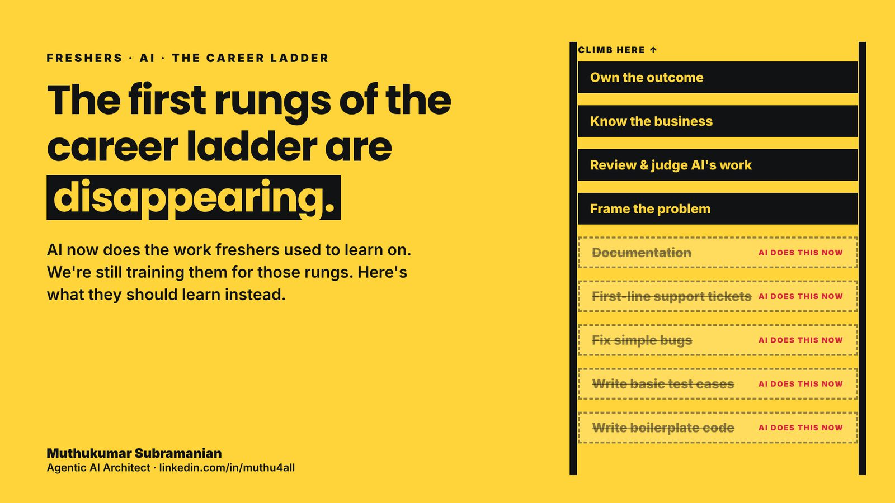
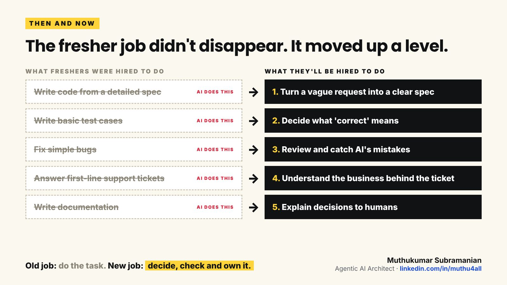
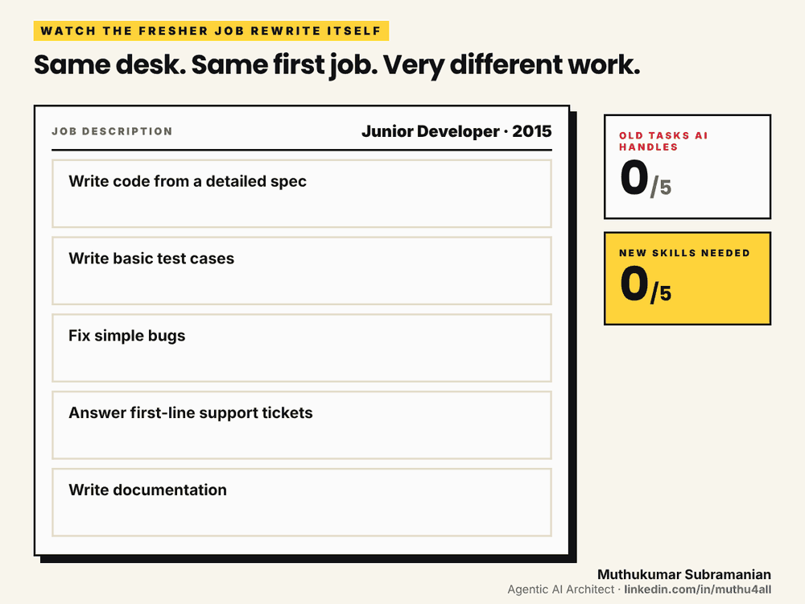
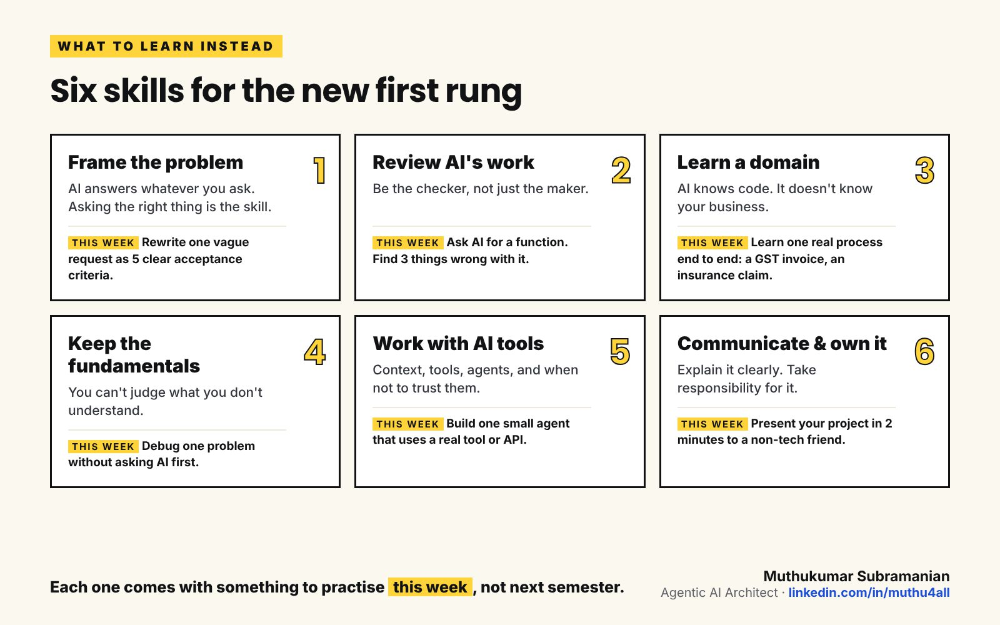

We're Still Training Freshers for Jobs AI Already Does. Here's What They Should Learn Instead.
By Muthukumar Subramanian · Agentic AI Architect

Whenever I talk to students, whether I'm on the jury at a college competition or in a mentoring session, one question keeps coming up in some form:
"Sir, will there still be jobs for us?"
It's a fair question. And I think the honest answer is more useful than the comforting one.
Yes, there will be jobs. But not the ones we're training you for.
The bottom rungs are disappearing
Think about how most of us started in IT.
You joined as a fresher. You were given a detailed spec and asked to write the code. You wrote test cases. You fixed small bugs from a ticket queue. You answered first-line support calls. You wrote documentation nobody read.
It was boring. It was also how you learned. Two or three years of that, and you slowly earned the right to make decisions.
Now look at that list again.
Writing code from a clear spec. Writing basic test cases. Fixing simple bugs. Answering routine tickets. Writing documentation.
That is exactly the work AI does first, and does well.
The career ladder hasn't gone away. Its bottom rungs have. And we're still training freshers to stand on rungs that aren't there anymore.
The work didn't disappear. It moved up a level.
Here's what I think is actually happening.
Every one of those old tasks has a harder, more human version sitting just above it:
→ Instead of writing code from a spec, someone has to turn a vague request into a clear spec.
→ Instead of writing test cases, someone has to decide what "correct" actually means.
→ Instead of fixing simple bugs, someone has to review AI's work and catch its mistakes.
→ Instead of answering tickets, someone has to understand the business behind the ticket.
→ Instead of writing documentation, someone has to explain decisions to other humans.
The old fresher job was do the task. The new one is decide, check and own it.
That's harder. But it's also more interesting, and nobody is going to automate it soon.

Watch the job description change
Same desk, same first job, very different work.

So what should freshers actually learn?
Here are six skills I'd focus on, each with one thing you can practise this week, not next semester.
1. Frame the problem.
AI will answer whatever you ask. Asking the right thing is the skill.
This week: take one vague request ("build a dashboard for sales") and rewrite it as five clear acceptance criteria.
2. Review AI's work.
Be the checker, not just the maker. Companies will need people who can look at AI-generated code or analysis and spot what's wrong.
This week: ask an AI to write a function, then find three things wrong with it.
3. Learn a domain.
AI knows code. It doesn't know your business. A fresher who understands how a GST invoice, an insurance claim or a loan approval actually works is worth far more than one who only knows syntax.
This week: learn one real business process end to end.
4. Keep the fundamentals.
You can't judge what you don't understand. Data structures, databases, how APIs work, how systems fail: these matter more now, not less.
This week: debug one problem without asking AI first.
5. Work with AI tools properly.
Not just prompting. Giving context, connecting tools, building small agents, and knowing when not to trust the output.
This week: build one small agent that uses a real tool or API.
6. Communicate and own it.
Explain your work clearly. Take responsibility for the result. This has always mattered, and now it's most of the job.
This week: present your project in two minutes to a friend who isn't technical.

A word to colleges
If students can now generate an assignment in thirty seconds, grading the assignment tells you very little.
Grade the thinking instead. Let students use AI, then ask them to defend the result. What did it get wrong? What would you change? Why is this the right approach for this business problem? A ten-minute viva on AI-assisted work will tell you more than a 40-page project report.
A word to companies
It's tempting to say, "AI does the junior work now, so let's hire fewer juniors."
Be careful. Every senior engineer, architect and CTO you have today was once a fresher doing boring work. If you remove the bottom of the ladder, you'll have nobody to promote in ten years.
The answer isn't fewer freshers. It's a redesigned first job: pair them with seniors, give them review and evaluation work early, and let them learn judgement sooner than we did.
A word to parents
Don't panic, and don't push your child away from technology. Push them towards depth: one domain they understand well, strong fundamentals, and the confidence to question an answer, including one that came from a machine.
The bottom line
The fresher of tomorrow won't be hired to write the code.
They'll be hired to know what to build, check what was built, and own what happens next.
That's not a smaller job. It's a bigger one, and it starts on a higher rung.
I'd really like to hear from both sides on this:
If you're hiring: what do you want freshers to be good at now? If you're a student: what's the one thing you wish your college taught you?